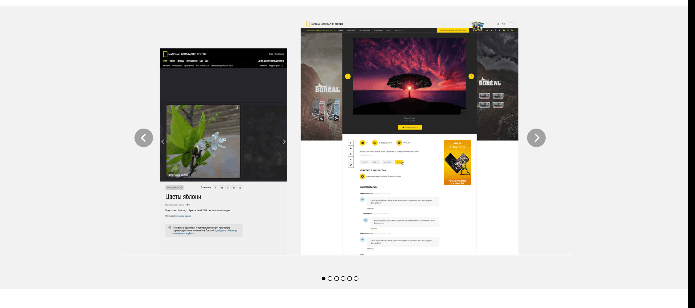
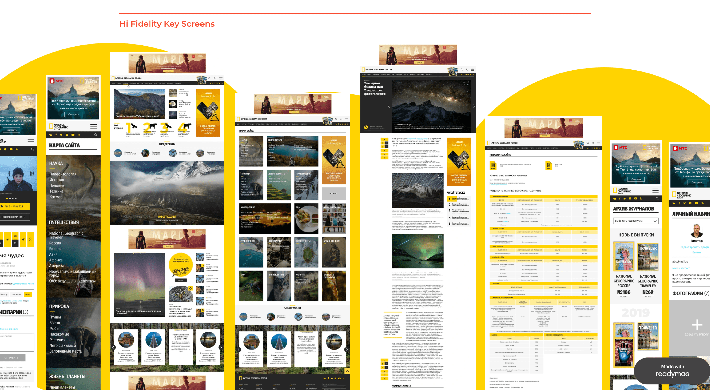
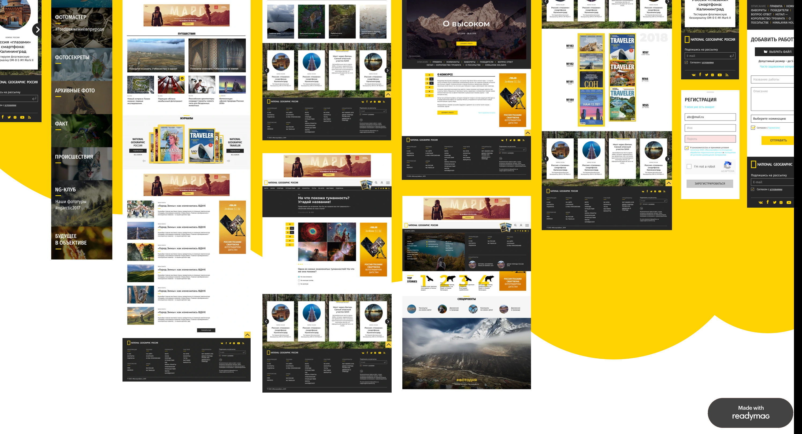
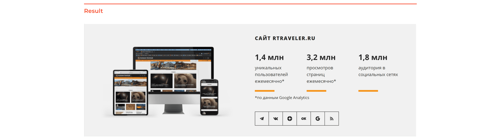
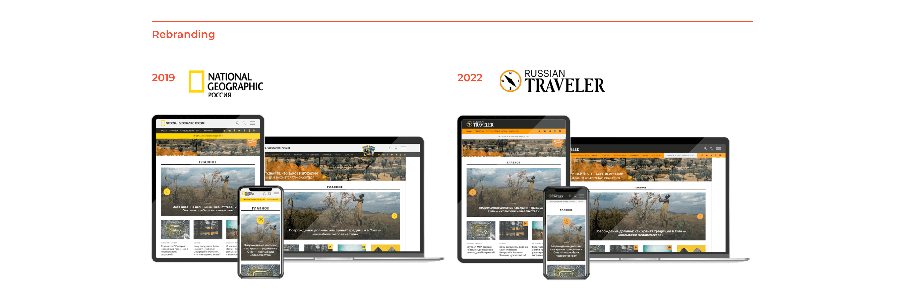

Дизайн-процесс
- Анализ старой версии, определение user flows
- Поиск и определение путей устранения слабых мест в юзабилити
- Прототипирование новых разделов и фич: веб-подписка, фотонаграды, платный контент
- Разработка интерфейсов личного кабинета, подписки на журнал и аплоада фотографий на конкурсы
- Трансформация диджитал-рекламы: баннеры были уменьшены в размерах и стали менее назойливыми и при этом более эффективными
- Разработка UI-кита и гайдлайнов.
- Финально отрисовано 100+ страниц для десктопа + Ipad и mobile версии для каждой страницы
- Участие в разработке конструктора рубрик, позволяющего редакторам произвольно менять облик страниц, и новой админки
- Взаимодействие с разработчиками и контроль качества реализации



Полистать Russian Traveler






04 Сайт журнала National Geographic Russia / Russian Traveler
Роль Senior Product Designer
Инструменты Trello, Figma, Invision
Аудитория 1 400 000+ уников ежемесячно
Год запуска 2019
Этап 1 В 2019 году российское подразделение известного журнала National Geographic с долгой историей и большой аудиторией нуждалось в современной онлайн-версии с хорошим юзабилити и адаптивным дизайном, которую одобрит головной офис в США. На момент начала работы у сайта была только десктопная версия, сделанная в 2000х.
Этап 2 Позднее, в 2022 году, National Geographic прекратила свою деятельность в РФ, и сайту вслед за печатным изданием потребовался ребрендинг под новое название — Russian Traveler.